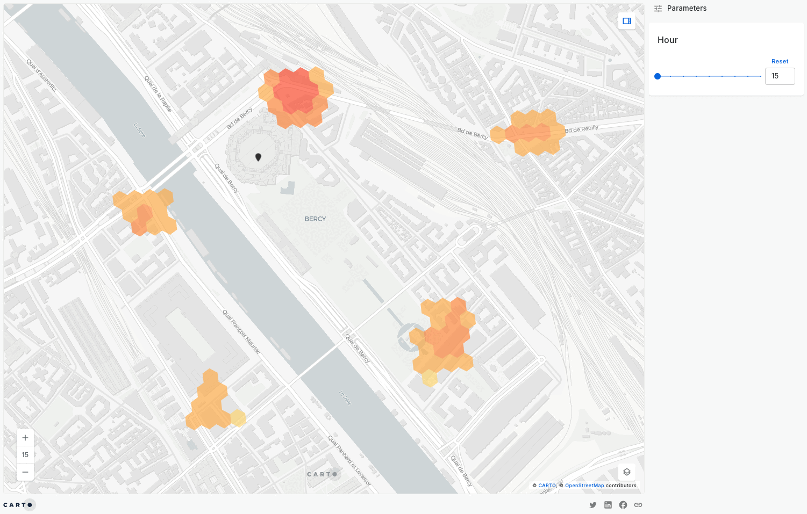

Spatial Ontologies - Process
We previously examined how the foundational spatial concepts of space and place have been addressed in GIScience. There are many open questions about both these concepts. In this section, we will examine one of those questions. Both space and place often assume that the world is made up of relatively stable things that simply sit somewhere and then change over time. Even when we explicitly consider change through time, we often treat change as something that happens to objects, while ignoring the underlying processes that produce those changes in the first place. As a result, we may struggle to account for transformation effectively.
In this section, we introduce a more radical spatial ontology: the idea that process, not object, is primary. Rather than beginning with things and asking how they change, we begin with change itself and ask how apparently stable things emerge from it.
Process Philosophies
Process philosophy begins with a simple but powerful claim: the world is not composed of stable substances, but of continuous change. An early encapsulation of this idea comes form Heraclitus.
On those stepping into rivers staying the same other and other waters flow.
Or, perhaps more famously and simply, Plato summation:
Heraclitus, I believe, says that all things pass and nothing stays, and comparing existing things to the flow of a river, he says you could not step twice into the same river.
While this fragement is commonly read to imply that all things change, it in fact makes a more profound statement. It is not that all things are changing so we cannot encounter them twice. It is the idea that some things stay the same only by changing. Taken further this idea implies that some objects exist by virtue of constant turnover in its constituent parts. Constancy and change are not opposed but deeply connected.
This way of thinking has often been overshadowed in Western science by what is sometimes called “substance thinking,” where we assume that objects exist first and processes happen to them later. Process philosophy reverses this logic. It suggests that change is fundamental, and that what we call “things” are only temporary stabilizations within that flux.
To situate this within a spatio-temporal ontology, several shifts, mentioned by O’Sullivan, follow naturally:
- Time no longer needs to be imagined as a simple linear progression; it may be cyclical or rhythmic.
- The past and the future are not merely absent moments, but active influences on the present.
- Geographic entities are understood as dynamic processes rather than fixed physical objects. And time is not just a fourth dimension added onto three-dimensional space, but inseparable from place itself.
- Space and time are intertwined within ongoing events rather than existing as separate containers.
Whitehead’s work is especially influential here. He argues for understanding reality as constituted by process, not in terms of things located in space-time. Even apparently solid and durable entities are constantly remaking themselves. A mountain, a city, or even a person is not fixed, but an ongoing pattern of becoming. In this view, stability is something that must be explained rather than assumed. What looks permanent is simply a process that changes slowly enough for us to perceive continuity.
This reframing around may sound philosophically abstract, but it has very practical consequences for GIScience. Much of our software and data structures are built around stable objects stored in tables and layers—points, lines, polygons, and attributes that appear fixed. Process philosophy raise the question whether this object-centered starting point accurately reflects how the world actually works.
Mesle’s (2008) introduction to process philosophy is also very approachable. He argues that, far from being difficult, process thinking is intuitive. It is simply an effort to think clearly about the obvious truth that our world and our lives are dynamic, interrelated processes. What is actually counterintuitive, he suggests, is the idea that the world is made of independent things that endure unchanged through time. In many ways, process philosophy asks us to trust everyday experience and we already know that everything changes.
For some process philosophers, this concern extends beyond the external world to the individual perceiving and experiencing subject. Process thinking therefore not only emphasizes change and relation, but also dissolves Western thought’s habitual privileging of the conscious human mind over inert matter. Instead of centering isolated individuals acting on a passive world, both people and environments are understood as mutually constituting processes.
Whatever flavor of process philosophy we consider, the core implication remains the same: if events and change are fundamental, then the entities we observe as stable are simply more or less constant patterns of occurrence.
In reality, Whitehead does not provide a strict methodological recipe for how to analyze the world. Instead, he offers a philosophical orientation: recognize the processual nature of reality, and recognize our oneness with that nature. For GIScience, this orientation encourages us to look beyond static snapshots and toward the dynamic processes that generate the patterns we observe.
Process, Space, and Place
If everything is process, then what happens to space and place?
Blaut (1961) addresses this question directly in Space and Process. Blaut argues that there can be no such thing as space devoid of process: every empirical concept of space must ultimately be reducible, through a chain of definitions, to some underlying concept of process. In other words, space is not something that exists first and then hosts events. Rather, space is something that emerges from events themselves.
Space and time are not, therefore, independent realities or empty containers within which things occur. Instead, they are relations derived from processes and events. An understanding of process must precede our understanding of space and time. For our purposes, the key takeaway is simple: space, time, and place are inseparable from process.
For Whitehead, all of these can be understood as societies of events, where events occur together in association with one another and continually reproduce a persistent thing. What appears to endure is really a coordinated pattern of repeated happenings. Stability is not a starting point; it is an achievement.
This perspective dissolves many familiar separations that we often take for granted: structure versus process, pattern versus change, space versus time. What we usually call “structure” may simply be slow process. A road network, for example, looks static when mapped, but it is really the outcome of decades of maintenance, traffic, policy decisions, construction, and everyday use. A neighborhood is not a container with fixed contents, but a constantly evolving set of flows—of people, capital, culture, and memory.
Process and Patterns
It is also worth touching on the relationship between process and patterns. If processes are fundamental, then how do we observe them? Often, only indirectly, through the patterns they leave behind.
Quantitative geographers have long emphasized spatial patterns, although “pattern” itself is an ill-defined and sometimes slippery concept. What we call a pattern is often just a regularity we recognize visually or statistically. Whitehead offers a helpful way to think about this: we recognize things because we can say, “there it is again.” Repetition produces pattern. Endurance is simply the repetition of similar events over time. A city block persists because similar activities recur there day after day. A river persists because water continually flows along roughly the same channel. What we see as a stable object is really the trace of repeated processes.
Point pattern analysis, for example, explicitly asks what kinds of generative processes could produce the observed arrangement of events (Figure 1). In this sense, spatial statistics is already implicitly process-oriented, even if it sometimes appears focused only on snapshots. The central concern of point pattern analysis and many other branches of spatial analysis is precisely this question: what kinds of processes could yield this observed pattern? While spatial analysis is sometimes criticized for emphasizing instantaneous views of the world, it is actually much more concerned with the dynamic processes that may or may not give rise to the spatial configurations we observe.

Figure 1: Mobility hotspots at the Paris Olympics; Source: CARTO
As an example, many practical applications of this process–pattern relationship can be seen in these time-series and flow maps. See a full collection of example here.
The purpose of characterizing spatial patterns is not the identification of patterns for their own sake. Spatial Patterns matter because they provide clues about the processes that produced them. At the same time, we must be cautious. The relationship between process and pattern is rarely straightforward. The same or similar processes unfolding in different contexts may yield very different patterns (multifinality); conversely, very different processes can produce patterns that look remarkably similar (equifinality). The challenge of moving between process and form is a central challenge of geographic research.
Returning to GIScience, process may exhibit many spatio-temporalities, and it is necessary to recognize this in any attempt to examine processes through spatial analysis. Local spatial statistics were not developed with this critique in mind, and it is important not to overstate their accomplishments. Nevertheless, they remain useful tools for revealing the multiple scalar and temporal dimensions of processes, especially when diverse distance metrics are deployed.
Reference:
O’Sullivan, D. (2024). Process and pattern. In Computing geographically: Bridging GIScience and geography (pp. 211–226). Guilford Publications.